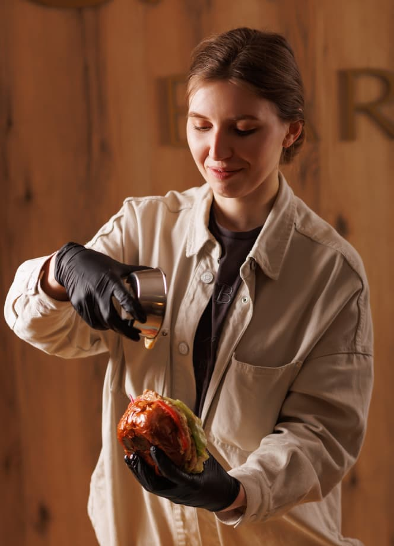

Історія про Cava Bar
Ідея створення закладу крутилась в голові дуже давно, але почалось все з невеликої кондитерської вдома.
З самого початку хотіла зробити нестандартне естетичне кафе з багатьма локаціями для фото.
Однин з найскладніших етапів був ремонт: довго… багато нервів, часто змінювали дизайн і...
робили перестановки, але воно було того варто!
Наступним етапом було створення меню. Головним критерієм для нас було ваше гастрономічне задоволення. Щоб кожен гість зміг знайти свого улюбленця серед нашого меню. Починаючи з раннього сніданку, закінчуючи легким салатом у вигляді вечері. І, звісно, не забуваємо про найніжніші десерти та ароматну каву.
«CAVA BAR» - молодий заклад міста Броди. Це не лише естетичний інтер’єр і смачна кава. В першу чергу - це найкращі люди, які створюють затишну та дружню атмосферу в улюбленій кав’ярні.
«CAVA BAR» - це велика сім’я
І пам’ятай: «Кава вирішує все» ❤️